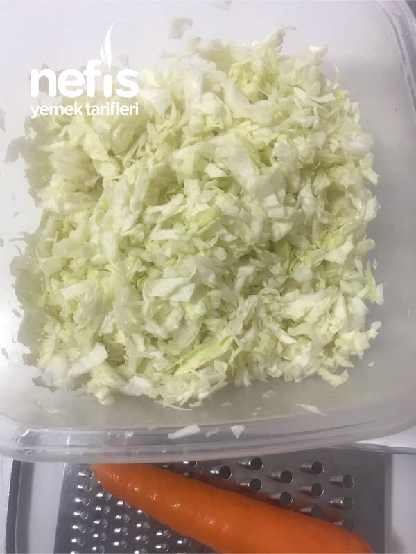

🍽️ 6-8 kişilik⏱️ Hazırlık: 15 dk🏷️ Salata & Meze & Kanepe🏷️ Salata Tarifleri
Malzemeler
- Büyüklüğüne göre yarım veya çeyrek lahana
- 1 -2 adet havuç
- 2 kırmızı kapya biber
- 1 tane haşlanmış yumurta
- 5-6 kornişon veya 2-3 salatalık
- 2 kaşık mayonez
- Yarım kg yoğurt
- Yarım limon
- Tuz, karabiber, pulbiber
- 1 diş sarımsak
Hazırlanışı
- Lahanaları ince kıyıyoruz, az tuzla hafif ovuyoruz.
- Kırmızı biberi de ince doğrayıp ilave ediyoruz( olmadığı için kullanamadım).
- Havucu rendeleyerek ilave ediyoruz.
- Yumurtayı da rendeleyerek ilave ediyoruz.
- Kornişonları da doğrayarak ilave ediyoruz.
- Tuz, karabiber, pulbiber, mayonez, limon suyu ve yoğurdu ilave ederek karıştırıyoruz.
- Dolapta bir kaç saat bekletiyoruz.Nefis salatamız hazır.Afiyet olsun 😊.